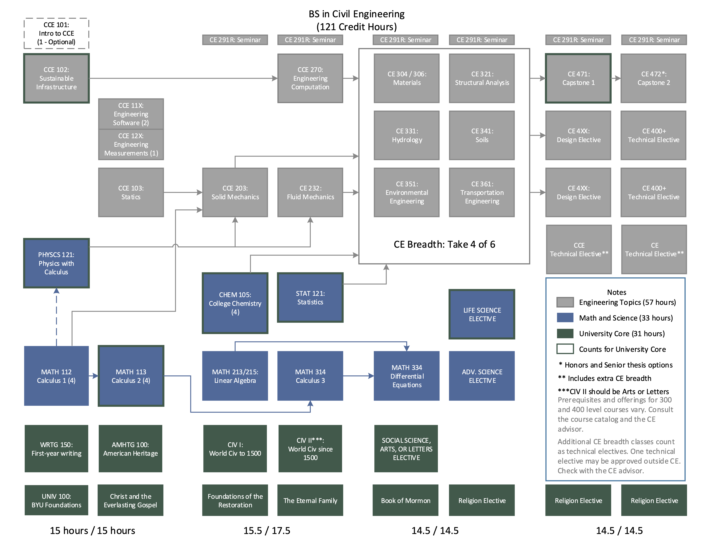

Civil Engineering Curriculum
A redesign proposal
Motivation
Built environments that are well designed, constructed, and maintained improve the quality of life for God’s children on His earth. These built environments face threats and challenges that change rapidly: natural hazards, climate change, population growth, and global economic and political conditions all at times threaten human happiness and well-being. The mission of the Civil Engineering program at Brigham Young University should be to develop students of faith, intellect, and character who are capable of meeting and solving challenges to built environments now and in the future.
BYU’s civil engineering program has historically succeeded in generating high-quality, well-trained graduates. But as the field of civil engineering changes, the skills students need to address these challenges change as well. Further, graduating seniors have regularly commented on the inflexibility and inefficiency of our current program. This document describes a proposal for several changes to the requirements for a Bachelor of Science degree in Civil Engineering that we hope will better prepare our students with broad and highly flexible degree program.
In creating this proposal, the Undergraduate Curriculum Committee was deeply impressed by these two paragraphs from the Undergraduate – Depth section of Aims of a BYU Education:
Depth does not result merely from taking many courses in a field. Indeed, excessive course coverage requirements may discourage rather than enhance depth. Depth comes when students realize “the effect of rigorous, coherent, and progressively more sophisticated study.” Depth helps students distinguish between what is fundamental and what is only peripheral; it requires focus, provides intense concentration, and encourages a “lean and taut” degree that has a “meaningful core” and a purposefully designed structure (Memorandum to the Faculty No. 13). In addition to describing carefully structured academic majors, this description applies to well-designed BYU courses of all kinds.
The chief result of depth is competence. BYU’s students should be “capable of competing with the best students in their field” (Mission Statement). Even so, undergraduate study should be targeted at entrance-level, not expert-level, abilities. The desire for depth should not lead to bachelor’s degrees that try to teach students everything they will need to know after graduation. Students should be able to complete their degrees within about four years.
The specific proposals we include in the remainder of this document are made with the intent to
Increase personal agency and personal investment for students in the program by offering meaningful course options at several places.
Allow students to complete either a broad civil engineering degree or develop targeted skills based on their interests and desires.
Decrease the number of credit hours required for a degree to approximately 120 credit hours.
Develop a framework that allows for new discipline area courses (e.g., data science, construction engineering) to seamlessly enter the program in response to changing industry needs.
A flowchart with the proposed changes is given in Figure 1. This proposal reduces the required credit hours to 122 from 128. The remainder of this document presents the changes by class year, along with a set of informal learning outcomes for each year. Chapter 5 presents a series of “student stories” describing how a variety of students might approach a civil engineering degree in the new program, complete with individual flowcharts.
